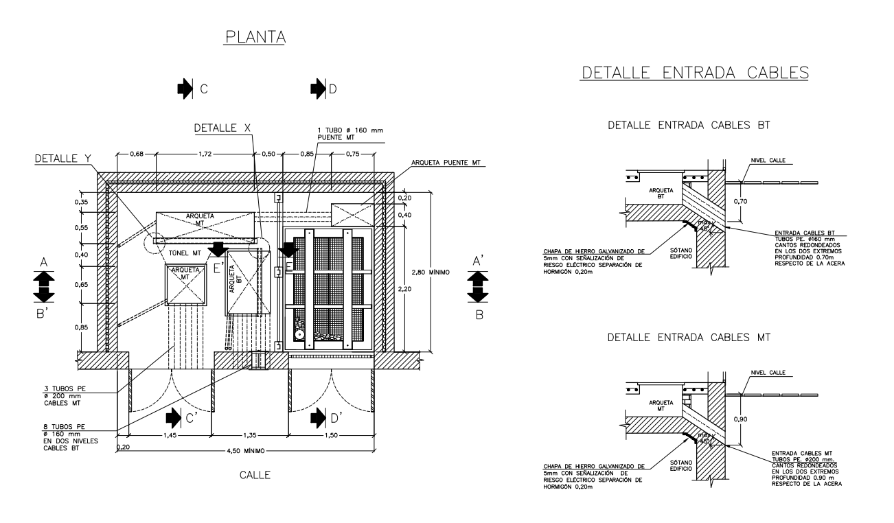

Operació, manteniment, PRL I PMA als CT ======================================= 1. Introducció -------------- En aquesta unitat (**Operacions de manteniment, prevenció de riscos laborals i protecció ambiental en centres de transformació**) s'aborden els procediments de manteniment dels centres de transformació (CT), l'anàlisi de protocols i la identificació d'activitats. També s'apliquen les normes de prevenció de riscos laborals i protecció ambiental en el muntatge i manteniment d'instal·lacions elèctriques de distribució, identificant riscos associats, mesures preventives i equips de protecció. > <div class="gallery"> > <img src="https://encrypted-tbn0.gstatic.com/images?q=tbn:ANd9GcSFrMjA9MJyXNYUM62tJrxYpcL_OLeQi9ToMye3uLoaXG7gEo1RKq-7bgUv&s=10" alt="CT intempèrie"> > <img src="https://plantillea.com/cdn/shop/products/03_01_plantillea_proyecto_centro_transformacion_edificio_viviendas_01.jpg?v=1615401684" alt="CT integrat"> > <img src="https://upload.wikimedia.org/wikipedia/commons/3/36/2007-06_Bernburg_02.jpg?utm_source=es.wikipedia.org&utm_campaign=index&utm_content=original" alt="CT caseta"> > <img src="https://ipejma.com/wp-content/uploads/2021/03/595d1c6a-c31c-48af-8cde-c0623d839f5b.jpg" alt="CT abonat"> > <p></p> > <img src="https://www.desdesoria.es/asset/thumbnail,1280,720,center,center/media/desdesoria/images/2022/12/02/2022-12-02.-Gomez-Villanueva-y-Lumbreras-presentan-el-iTRAFO.jpg" alt="Interior CT"> > </div> > > **Fig. 1 a 6.** Diferents autors (2026). > _Aquestes imatges es subsituiran per les aportades pel alumnes_. > Imatge sota llicència ?? 1. Instruccions generals per a la realització de maniobres ---------------------------------------------------------- En el cas de dues alimentacions, cada cel·la disposa d'un esquema del circuit amb els eixos d'accionament de l'interruptor, el seccionador de posada a terra i la senyalització de posició de l'interruptor. >  > **Fig. 2.** [J. Servera _et al._], [CIFP Usurbil LHII] (2024) > _Cel·les d'un centre de transformació_. > Imatge sota llicència [CC4.0-by-nc-sa] ### 1.1. Normes bàsiques de seguretat prèvies a qualsevol maniobra: Aquestes normes s'han de coneixer prèviament a efectuar cap treball, i s'han de seguir en tot moment. - No accionar mai un seccionador en càrrega. - Per tallar servei en un circuit en càrrega, obrir primer l'interruptor d'obertura de càrrega o l'interruptor automàtic. - Abans de tancar un seccionador de posada a terra, verificar l'absència de tensió. - Abans de restablir el servei, comprovar que els seccionadors de posada a terra estan oberts. Cal utilitzar el material de seguretat i la senyalització adequats per a cada maniobra. Per evitar tensions de retorn per doble alimentació, s'ha d'obrir l'interruptor automàtic del quadre de BT. <!-- Revisar el punt 1.2, 1.3 i 1.4 no m'agrada la falta de precisió de les maniobres --> ### 1.2. Maniobres en la cel·la de l'interruptor Si el CT és de pas (alimenta altres centres), la cel·la de l'interruptor es disposa com a cel·la de sortida per garantir l'alimentació. La seqüència és: obrir l'interruptor seccionador, comprovar l'absència de tensió i descarregar el cable a terra amb el seccionador de posada a terra o amb una perxa de posada a terra. Si persisteix tensió, actuar sobre la cel·la de sortida d'aquest cable. ### 1.3. Maniobres en la cel·la de protecció amb fusibles Cal tancar l'interruptor seccionador i carregar la molla per a l'actuació automàtica. Per substituir un fusible: obrir l'interruptor seccionador (si el fusible s'ha fos, ja estarà obert), obrir l'interruptor automàtic del quadre de BT per evitar tensions de retorn, connectar el seccionador de posada a terra (o utilitzar una perxa de posada a terra), obrir la cel·la i canviar els fusibles. ### 1.3. Maniobres en la cel·la de protecció amb interruptor automàtic Amb el seccionador obert, el seccionador de posada a terra tancat i l'interruptor automàtic connectat: comprovar que l'interruptor general automàtic del quadre de BT està obert, obrir l'interruptor automàtic del CT, obrir el seccionador de posada a terra, comprovar l'absència de tensió, tancar el seccionador, tancar l'interruptor automàtic i comprovar la tensió a la sortida. 2. Utilització dels equips de protecció individual (EPI) -------------------------------------------------------- Un EPI és qualsevol equip destinat a ser portat pel treballador per protegir-lo d'un o diversos riscos. Han de dur marcatge amb el tipus de protecció, la tensió d'utilització, el número de sèrie i la data de fabricació. ### 2.1. EPI per a treballs en tensió (BT): - Casc aïllant (per a AT, BT i maniobres). - Pantalla facial (protecció contra projeccions i temperatures). - Ulleres inactíniques (protecció contra enlluernaments per curtcircuits). - Guants aïllants (per a treballs en BT en tensió o reposició de fusibles). - Guants ignífugs (protecció contra l'arc elèctric). - Guants de protecció mecànica (per protegir el guant aïllant). - Calçat de seguretat (protecció mecànica). - Cinturó de seguretat (prevenció de caigudes en altura). - Eines aïllades (protecció de les mans contra contactes elèctrics). - Roba de treball resistent a l'arc elèctric. A més, per protegir el treballador d'elements a diferent potencial, s'utilitzen dispositius aïllants (banquetes, plataformes) i accessoris per protegir conductors nus (teixits vinílics, cobertes). 3. Eines i instrumentació específica ------------------------------------ Per a treballs en MT i AT es requereixen: - **Perxes**: de salvament (45-90 kV), de maniobra (45, 66, 132 kV) i de verificació d'absència de tensió (5-40 kV). - **Equips de posada a terra i en curtcircuit**: formats per pinça, unió de posada a terra i curtcircuit, i torn. ### 3.1. Eines segons el tipus de treball: - **Maniobres en interruptors i seccionadors**: es fan servir simultàniament dos elements: perxa aïllant, guants aïllants o banqueta aïllant. - **Maniobres de tall**: evitar el funcionament intempestiu amb mesures en l'accionament mecànic; obrir primer els circuits de tensió més baixa i després els de tensió més alta. - **Maniobres en transformadors**: situar cartells en aparells de tall per evitar maniobres posteriors; si només hi ha dispositiu de tall en càrrega en AT, invertir l'ordre de desconnexió; verificar l'absència de tensió en AT i BT; tancar el secundari del TI amb alimentació o en curtcircuit. >  > **Fig. 8.** [Martin _et al._] (2026). [IOC]. > _Eines per a MT i AT_. > Imatge sota llicència [CC3.0-by-nc-sa] 1. Multicontrolador de baixa tensió 6 a 690 V AC DC 2. Antenes de contacte per multicontrolador longitud: 1,25 m 3. Equip de posada en curt circuit 4. Perxa aïllant telescòpica 5. Equip complementari de posada a terra 6. Pica de terra longitud: 1 m. 4. Maniobres bàsiques segons el tipus de cel·la ----------------------------------------------- A cada cel·la hi ha un esquema del circuit principal amb els eixos d'accionament i les senyalitzacions. >  > **Fig. 9.** [Martin _et al._] (2026). [IOC]. > _Diferents tipus de cel·les_. > Imatge sota llicència [CC3.0-by-nc-sa] - Cel·la de línia (CML) - Cel·la d’interruptor passant (CMIP) - Cel·la de protecció amb fusibles (CMP-F) - Cel·la d’interruptor automàtic (CMP-A) ### 4.1. Cel·la de línia (CML): La cel·la de línia, connecta amb les línies exteriors de mitja tensió, és una cel·la molt senzilla ja que només te les funcions següents: - Obertura/tancament del seccionador de posada a terra - Tancament/obertura de l’interruptor - Senyalització de posició de l’interruptor >  > **Fig. 10** > Ormazabal (2026) > _Cel·la de línia (CML)_. > Imatge amb copyright<sup>©</sup> utilitzada en aplicació de l'article > 32 de la [LPI] ### 4.2. Cel·la d'interruptor passant (CMIP): Una altra de les cel·les més senzilles,només es un interruptor intercalat amb únicament les següents maniobres: - Obertura/tancament de l’interruptor - Senyalització de posició de l’interruptor >  > **Fig. 11** > Ormazabal (2026) > _Cel·la de interruptor passant (CMIP)_. > Imatge amb copyright<sup>©</sup> utilitzada en aplicació de l'article > 32 de la [LPI] ### 4.3. Cel·la de protecció amb fusibles (CMP-F): Amb aquesta cel·la el protegeix el transformador que hi ha al CT. Interromp la energització del trafo, no de les linies de MT que segueixen funcionant normalment. Té les següents maniobres: - Obertura/tancament del seccionador de posada a terra - Tancament de l’interruptor/càrrega de ressorts - Senyalització de posició de l’interruptor - Alliberació de ressorts amb obertura de l’interruptor - Senyalització de la posició de fusibles >  > **Fig. 12** > Ormazabal (2026) > _Cel·la de protecció amb fusibles (CMP-F)_. > Imatge amb copyright<sup>©</sup> utilitzada en aplicació de l'article > 32 de la [LPI] ### 4.4 Cel·la d'interruptor automàtic (CMP-A): A l'igual que l'anterior cel·la aquesta cel·la també té funcions de protecció, no obstant, a diferència de l'anterior no té fusible sinó que els curtcircuits i algunes sobrecàrregues venen protegides per un interruptor automàtic. Les seves funcions són: - Obertura/tancament del seccionador de posada a terra - Tancament de l’interruptor/càrrega de ressorts - Senyalització de posició de l’interruptor - Alliberació de ressorts amb obertura de l’interruptor - Senyalització de la posició de fusibles >  > **Fig. 12** > Ormazabal (2026) > _Cel·la d'interruptor automàtic (CMP-A)_. > Imatge amb copyright<sup>©</sup> utilitzada en aplicació de l'article > 32 de la [LPI] 5. Plans de manteniment en centres de transformació --------------------------------------------------- El manteniment es classifica en: - **Preventiu**: inspeccions periòdiques i renovació d'elements danyats. - **Correctiu**: actuació sobre avaries imminents o ja produïdes. - **Predictiu**: anticipació a la falla mitjançant monitoratge de condicions. ### 5.1. Intervals de revisions <table> <thead> <tr> <th>Tipus d'instal·lació</th> <th>Revisió</th> </tr> </thead> <tbody> <tr> <td>Preses de terra<br/> </td> <td><ol style="margin: 0; padding-left: 20px;"> <li>Revisió cada tres anys (MIE-RAT 13)</li> </ol></td> </tr> <tr> <td>Instal·lacions elèctriques de més de 1.000 V en corrent altern o centres de transformació (CT) constituïts per un o més transformadors reductors d'alta a baixa tensió</td> <td><ol style="margin: 0; padding-left: 20px;"> <li>Contracte de manteniment amb empresa autoritzada (llevat d'excepcions) (art. 12 RD 3275/82)</li> <li>Inspecció periòdica cada tres anys per un organisme de control autoritzat (art. 13 RD 3275/82)</li> <li>Llibre d'instruccions de manteniment (MIE-RAT 14 i MIE-RAT 15)</li> </ol><br/> </td> </tr> <tr> <td>Línies i altres instal·lacions destinades al transport, distribució i subministrament d'energia elèctrica en AT</td> <td><ol style="margin: 0; padding-left: 20px;"> <li>Revisió cada tres anys, realitzada per tècnics titulats, lliurement designats pel titular de la instal·lació, que han d'omplir els butlletins corresponents (art. 163 RD 1955/2000)</li> <li>Inspeccions realitzades per la Comissió Nacional de l'Energia, mitjançant procediment reglat, en col·laboració amb els serveis tècnics de l'Administració general de l'Estat o de les comunitats autònomes on s'ubiquin, en aquelles instal·lacions en què l'autorització correspongui a l'Administració general de l'Estat (art. 164 RD 1955/2000)</li> </ol></td> </tr> </tbody> </table> 6. Avaries tipus en centres de transformació: localització i reparació ---------------------------------------------------------------------- - **CT d'intempèrie**: causes climàtiques i actes vandàlics. Elements més afectats: aïllants, fusibles i autovàlvules (fàcil substitució i identificació visual). El RD 614/2001 estableix la formació mínima dels treballadors. - **CT d'interior**: trencament de comandaments de cel·les (cal comunicar al fabricant). - **Males connexions (cargols mal ajustats)**: es detecten per augment de temperatura amb càmeres termogràfiques. 7. Mesures característiques i paràmetres de control per a CT ------------------------------------------------------------ Es distingeix entre CT d'interior i d'intempèrie. ### 7.1. Operacions en CT d'interior: - **Identificació i seguretat**: identificar el CT amb la seva fitxa i ordre de treball; complir mesures de seguretat de la companyia. - **Posades a terra**: comprovar conductors i connexions, mesurar resistència de terra, tensions de pas i contacte, verificar connexió de la terra del neutre. - **Transformadors**: nivell d'oli, fuites, bloqueig de rodes, actuació del termòmetre. - **Aparellatge d'AT**: estat d'autovàlvules (si entrada aèria), funcionament de detectors de tensió. - **Embarrats i connexions**: detectar escalfament per infrarojos, distàncies, seccions i estat de connexions. - **Locals i proteccions**: tancaments, dimensions reglamentàries, fossa de recollida d'oli, ventilació, humitat, rètols, enllumenat d'emergència, proteccions contra contactes, banqueta aïllant, sistema d'extinció. - **Proteccions al secundari de BT**: proteccions contra contactes, escalfament en barres i connexions (infrarojos), estat i intensitat dels fusibles. - **Gestió de residus**: comprovar l'existència de residus perillosos sense envàs o mal envasats. ### 7.2. Operacions en CT d'intempèrie: - **Identificació i seguretat**: similar als d'interior. - **Suport**: estat de fusta (esquerdes, podriment), formigó (esquerdes, trencaments), metall (deformacions, oxidació); diàmetre reglamentari, ferratges, desplom, sistema antiescalada, senyalització de perill. - **Tirants**: estat, connexió a terra/aïllament, protecció en llocs freqüentats. - **Fonamentació**: trencaments, estabilitat. - **Distàncies de seguretat**: distància al terreny de parts en tensió i de masses d'equips. - **Posades a terra**: igual que en interiors. - **Transformadors**: nivell d'oli i fuites. - **Aparellatge d'AT**: estat o absència de parallamps. - **Embarrats i connexions**: escalfament (infrarojos), distàncies, seccions, estat de connexions. - **Proteccions al secundari de BT**: adequació, escalfament en barres i connexions (infrarojos), connexions en mal estat. - **Gestió de residus**: comprovar residus a les proximitats (restes metàl·liques, aparellatge, vegetals...). 8. Condicions de posada en servei d'un CT ----------------------------------------- Abans de donar tensió, s'ha d'avisar el titular i el personal implicat, a partir d'aquest moment es considera que tot està en tensió, tot i no estar-ho encara. Un cop superada la revisió i desconnectada la BT dels transformadors, es dona tensió pel costat d'AT i es manté un mínim de 15 minuts. Es comprova la tensió de BT (rang ±7%), la rotació (prèviament senyalitzada) i la possibilitat de connexió en paral·lel amb altres transformadors. Es verifica el funcionament dels relés de protecció i dels comandaments a distància. Després, es normalitzen les connexions de BT i AT, es connecta i es fa que la transformació prengui càrrega. Amb càrrega significativa, s'observen punts calents, sorolls anormals, efluvis i el funcionament dels controladors. Si tot és correcte (o un cop efectuades les modificacions), es dóna d'alta la instal·lació. 9. Identificació dels riscos més importants ------------------------------------------- **En el manteniment de CT:** - Maniobres intempestives (imprevistes o per error) dels interruptors de les cel·les. - Tancament de seccionadors de posada a terra que generen curtcircuits. - Corrents de retorn a través de la xarxa de BT per doble subministrament. **En el muntatge i manteniment de línies aèries:** - Caiguda d'objectes i eines de l'operari. - Despreniments de material en perforacions sense protecció ocular. - Caiguda de persones a diferent nivell (escales). - Caiguda de persones al mateix nivell (eines deixades a terra). - Cops a vianants o treballadors per manca de senyalització. **En el manteniment de xarxes subterrànies:** Els mateixos riscos que en línies aèries (caigudes, cops, despreniments), a més de sorolls i vibracions per l'ús de maquinària d'excavació i compactació. 10. Mesures de seguretat i de protecció individual. --------------------------------------------------- ### 10.1. Treballs sense tensió. Les Cinc regles d'or. Per a treballs en AT sense tensió s'apliquen les **cinc regles d'or**: 1. **Obrir totes les fonts de tensió (tall visible)**: mitjançant seccionadors, fusibles o ponts. >  > **Fig. 13.** [Martin _et al._] (2026). [IOC]. > _Primera regla d'or: tall de tensió visible_. > Imatge sota llicència [CC3.0-by-nc-sa] 2. **Enclavar, bloquejar i senyalitzar els aparells de tall**: bloqueig físic (element aïllant), mecànic (cadenats, panys, passadors), elèctric (fusibles) o neumàtic (alimentació d'aire comprimit). >  > **Fig. 14.** [Martin _et al._] (2026). [IOC]. > _Segona regla d'or: bloqueig dels aparells de tall_. > Imatge sota llicència [CC3.0-by-nc-sa] 3. **Comprovar l'absència de tensió**: procedir com si la instal·lació tingués tensió, amb el material adequat (guants, ulleres, banqueta, perxa de salvament). Mantenir la distància de seguretat (RD 614/2001, taula de distàncies) i utilitzar detector d'absència de tensió (òptic, acústic o mixt). >  > **Fig. 15.** [Martin _et al._] (2026). [IOC]. > _Tercera regla d'or: comprovació d'absència de tensió_. > Imatge sota llicència [CC3.0-by-nc-sa] #### Taula de distàncies de seguretat (RD 614/2001): Els valors intermèdis es poden trobar per interpolació lineal. | U<sub>N</sub> (kV) | D<sub>PEL-1</sub> (cm) | D<sub>PEL-2</sub> (cm) | D<sub>PROX-1</sub> (cm) | D<sub>PROX-2</sub> (cm) | |-----|-----|-----|-----|-----| |≤1 | 50 | 50 | 70 | 300 | | 3 | 62 | 52 | 112 | 300 | | 6 | 62 | 53 | 112 | 300 | | 10 | 65 | 55 | 115 | 300 | | 15 | 66 | 57 | 116 | 300 | | 20 | 72 | 60 | 122 | 300 | | 30 | 82 | 66 | 132 | 300 | | 45 | 98 | 73 | 148 | 300 | | 66 | 120 | 85 | 170 | 300 | | 110 | 160 | 100 | 210 | 500 | | 132 | 180 | 110 | 330 | 500 | | 220 | 260 | 160 | 410 | 500 | | 380 | 390 | 250 | 540 | 700 | - **U<sub>N</sub>** és la tensió nominal de la instal·lació (expressada en kV). - **D<sub>PEL-1</sub>** és la distància fins al límit exterior de la zona de perill quan hi ha risc de sobretensió per caiguda d’un llamp (expressada en cm). - **D<sub>PEL-2</sub>** és la distància fins al límit exterior de la zona de perill quan no hi hagi el risc de sobretensió per raig (expressada en cm). - **D<sub>PROX-1</sub>** és la distància fins al límit exterior de la zona de proximitat quan resulti possible delimitar amb precisió la zona de treball i controlar que aquesta zona no se sobrepassa durant la realització del procés (expressada en cm). - **D<sub>PROX-2</sub>** és la distància fins al límit exterior de la zona de proximitat quan no sigui possible delimitar amb precisió la zona de treball i controlar que aquesta no se sobrepassada mentre es realitzen els treballs (expressada en cm). 4. **Posada a terra i curtcircuit de les fonts de tensió**: connectar els conductors a terra i en curtcircuit entre ells per evacuar corrents en cas de fallada, inducció o fenòmens atmosfèrics. Pot ser fixa (forma part del circuit) o portàtil (pinces, conductors i piques). >  > **Fig. 16.** [Martin _et al._] (2026). [IOC]. > _Quarta regla d'or: posada a terra i curtcircuit de fonts de tensió_. > Imatge sota llicència [CC3.0-by-nc-sa] 5. **Delimitar i senyalitzar la zona de treball**: amb cintes, cons o dispositius anàlegs; senyalitzar també les zones segures per al personal no implicat. >  > **Fig. 17.** [Martin _et al._] (2026). [IOC]. > _Cinquena regla d'or: senyalització_. > Imatge sota llicència [CC3.0-by-nc-sa] ### 10.2. Treballs en tensió Només poden fer-los treballadors qualificats, seguint el procediment establert; si la complexitat ho requereix, han d'haver assajat prèviament sense tensió. En llocs de comunicació difícil (orografia, confinament), cal la presència d'almenys dos treballadors amb formació en primers auxilis. **Tres mètodes de treball en tensió:** - **A potencial**: el treballador es posa al mateix potencial de l'element en tensió (utilitzat en AT de transport), amb aïllament respecte a terra i altres fases. - **A distància**: el treballador roman a potencial de terra (sobre suport, plataforma o terra) i utilitza eines acoblades a perxes aïllants de fibra de vidre amb resines epoxi (utilitzat en gamma mitjana d'AT). - **Amb protecció aïllant a les mans**: amb guants aïllants i eines manuals amb recobriment aïllant (utilitzat principalment en BT, també en gamma baixa d'AT). ### 10.3. Treballs en proximitat La **zona de perill** és l'espai al voltant d'elements en tensió on la presència d'un treballador desprotegit suposa risc d'arc elèctric o contacte directe. La **zona de proximitat** és l'espai des del qual es pot envair accidentalment la zona de perill. Les distàncies mínimes s'estableixen a la taula anterior. Només els treballadors qualificats poden accedir a la zona de perill, mitjançant mètodes especials (treballs en tensió). ### 10.4. Treballs en transformadors i màquines en AT - En transformadors de potència o tensió (TT): per treballar sense tensió, deixar sense tensió tots els circuits del primari i del secundari. - En transformadors d'intensitat (TI): prohibida l'obertura del secundari si el primari està en tensió (llevat que sigui necessari, cas en què s'han de curtcircuitar els borns del secundari). Per treballar sense tensió, deixar prèviament sense tensió el primari. - En la reposició de tensió, procedir de manera inversa a la desconnexió (primer els circuits de menys tensió). 11. Classificació dels residus per a la seva retirada ------------------------------------------------------ A banda de la contaminació acústica (sorolls i vibracions), els residus potencials són: - **Elements substituïts per avaria o canvi**: es tracten com a ferralla si no tenen restes de contaminants. - **Líquid refrigerant i oli del transformador**: En el cas de transformadors de resina, no hi ha oli. - **Hexafluorur de sofre (SF<sub>6</sub>)**: gas aïllant a les cel·les. És inert, més pesat que l'aire, no tòxic ni inflamable, però asfixiant. En exposar-se a temperatures elevades es descompon en productes tòxics i corrosius en presència d'humitat. És un potent gas d'efecte hivernacle, amb elevat potencial d'escalfament global i llarga vida atmosfèrica. En pèrdues en zones confinades, s'evapora ràpidament i pot causar asfíxia; el contacte amb el líquid produeix congelació. 12. Compliment de la normativa de PMA i PRL ------------------------------------------- ### 12.1. Normativa de gestió de residus: - Llei 10/1998 de residus. - Ordre MAM/304/2002, de valoració i eliminació de residus. - RD 208/2005, de gestió de residus d'aparells elèctrics i electrònics. El Catàleg Europeu de Residus (CER) utilitza codificació de sis xifres (grup, subgrup i residu). Exemple per a transformadors: - `16 01 09` — Transformadors i condensadors que contenen PCB i PCT. - `16 01 12` — Transformadors i condensadors amb olis sense PCB i PCT. ### 12.2 Normativa de prevenció de riscos: - RD 614/2001, de 8 de juny (treballs elèctrics i prevenció de riscos). - RD 485/1997, de 14 d'abril (senyalització de seguretat i salut). - Norma UNE 20460-4-41 (aïllaments, barreres i obstacles). - Reglament electrotècnic per a BT (RD 842/2002): ITC-BT-22 (protecció contra sobreintensitats), ITC-BT-23 (protecció contra sobretensions), ITC-BT-24 (protecció contra contactes directes i indirectes). [Martin _et al._]: https://ioc.xtec.cat/materials/FP/Recursos/fp_iea_m0236_/web/fp_iea_m0236_htmlindex/index.html "J. Martín Lledó, C. Sabaté Arrese, A. Sànchez Díaz, E. Sorribes Colell, E. Requena Amadas, A. Jurado Poza" [J. Servera _et al._]: https://servera-prof-github.io/about.html "J. Servera, _et al._" [CIFP Usurbil LHII]: https://www.lhusurbil.eus/web/default.aspx?lng=es "Usurbilgo Lanbide Eskola" [IOC]: https://ioc.xtec.cat/ "Web de l'Institut Obert de Catalunya" [CC3.0-by-nc-sa]: https://creativecommons.org/licenses/by-nc-sa/3.0/es/deed.ca "Llicencia Cretive Commons 3.0 Espanya - Reconeixement - No comercial - CompartirIgual" [CC4.0-by-nc-sa]: https://creativecommons.org/licenses/by-nc-sa/4.0/deed.ca "Llicencia Cretive Commons 4.0 Internacional - Reconeixement - No comercial - CompartirIgual" [LPI]: https://www.boe.es/eli/es/rdlg/1996/04/12/1/con